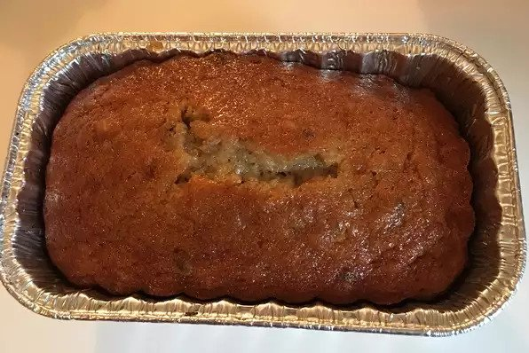

Banana Bread

Description
If you love banana bread you'll love this great recipe. It will make a super moist banana bread with only six bananas!
Ingredients
- 3 cups sugar
- 1 cup margarine, softened
- 1 teaspoon vanilla extract
- 4 eggs
- 3 ½ cups all-purpose flour
- 2 teaspoons baking soda
- ¼ teaspoon salt
- 1 cup buttermilk
- 6 very ripe bananas, mashed
Steps
- Preheat oven to 325 degrees F (165 degrees C). Lightly grease a 9x13 inch baking pan.
- In a large bowl, cream together the sugar and margarine until light and fluffy.
- Stir in the eggs one at a time, beating well with each addition, then stir in the vanilla.
- In a large bowl, sift together flour, baking soda and salt. Blend this mixture into the egg mixture, alternately with the buttermilk; stir just to combine.
- Fold in the mashed bananas; mixing just enough to evenly combine.
- Pour batter into prepared pan.
- Bake in preheated oven until a toothpick inserted into center of the loaf comes our clean, about 60 minutes.